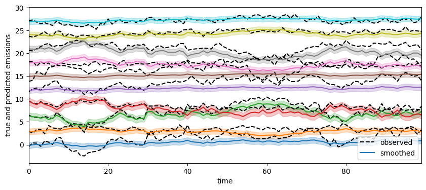
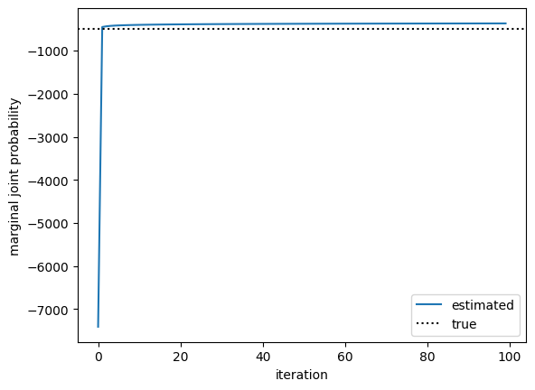
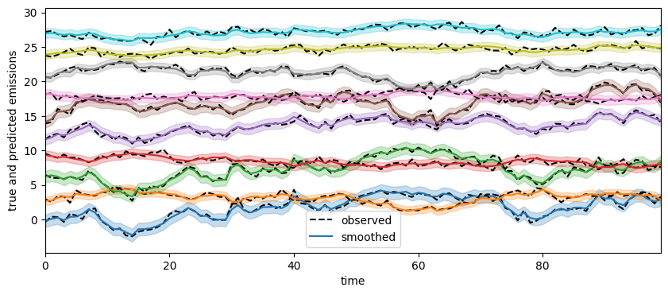
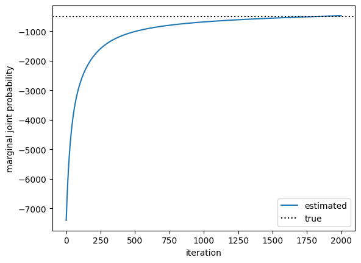
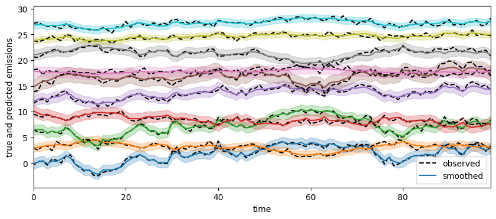

MAP parameter estimation for an LG-SSM using EM and SGD#
Setup#
Show code cell content
%%capture
try:
import dynamax
except ModuleNotFoundError:
print('installing dynamax')
%pip install -q dynamax[notebooks]
import dynamax
from jax import numpy as jnp
import jax.random as jr
from matplotlib import pyplot as plt
from dynamax.linear_gaussian_ssm import LinearGaussianConjugateSSM
from dynamax.utils.utils import monotonically_increasing
No GPU/TPU found, falling back to CPU. (Set TF_CPP_MIN_LOG_LEVEL=0 and rerun for more info.)
Data#
state_dim=2
emission_dim=10
num_timesteps=100
key = jr.PRNGKey(0)
true_model = LinearGaussianConjugateSSM(state_dim, emission_dim)
key, key_root = jr.split(key)
true_params, param_props = true_model.initialize(key)
key, key_root = jr.split(key)
true_states, emissions = true_model.sample(true_params, key, num_timesteps)
# Plot the true states and emissions
fig, ax = plt.subplots(figsize=(10, 8))
ax.plot(emissions + 3 * jnp.arange(emission_dim))
ax.set_ylabel("data")
ax.set_xlabel("time")
ax.set_xlim(0, num_timesteps - 1)
(0.0, 99.0)
Plot results#
def plot_learning_curve(marginal_lls, true_model, true_params, test_model, test_params, emissions):
plt.figure()
plt.xlabel("iteration")
nsteps = len(marginal_lls)
plt.plot(marginal_lls, label="estimated")
true_logjoint = (true_model.log_prior(true_params) + true_model.marginal_log_prob(true_params, emissions))
plt.axhline(true_logjoint, color = 'k', linestyle = ':', label="true")
plt.ylabel("marginal joint probability")
plt.legend()
def plot_predictions(true_model, true_params, test_model, test_params, emissions):
smoothed_emissions, smoothed_emissions_std = test_model.posterior_predictive(test_params, emissions)
spc = 3
plt.figure(figsize=(10, 4))
for i in range(emission_dim):
plt.plot(emissions[:, i] + spc * i, "--k", label="observed" if i == 0 else None)
ln = plt.plot(smoothed_emissions[:, i] + spc * i,
label="smoothed" if i == 0 else None)[0]
plt.fill_between(
jnp.arange(num_timesteps),
spc * i + smoothed_emissions[:, i] - 2 * smoothed_emissions_std[i],
spc * i + smoothed_emissions[:, i] + 2 * smoothed_emissions_std[i],
color=ln.get_color(),
alpha=0.25,
)
plt.xlabel("time")
plt.xlim(0, num_timesteps - 1)
plt.ylabel("true and predicted emissions")
plt.legend()
plt.show()
# Plot predictions from a random, untrained model
test_model = LinearGaussianConjugateSSM(state_dim, emission_dim)
key = jr.PRNGKey(42)
test_params, param_props = test_model.initialize(key)
plot_predictions(true_model, true_params, test_model, test_params, emissions)

Fit with EM#
test_model = LinearGaussianConjugateSSM(state_dim, emission_dim)
key = jr.PRNGKey(42)
test_params, param_props = test_model.initialize(key)
num_iters = 100
test_params, marginal_lls = test_model.fit_em(test_params, param_props, emissions, num_iters=num_iters)
assert monotonically_increasing(marginal_lls, atol=1e-2, rtol=1e-2)
100.00% [100/100 00:04<00:00]
plot_learning_curve(marginal_lls, true_model, true_params, test_model, test_params, emissions)
plot_predictions(true_model, true_params, test_model, test_params, emissions)


Fit with SGD#
test_model = LinearGaussianConjugateSSM(state_dim, emission_dim)
key = jr.PRNGKey(42)
num_iters = 100
test_params, param_props = test_model.initialize(key)
test_params, neg_marginal_lls = test_model.fit_sgd(test_params, param_props, emissions, num_epochs=num_iters * 20)
marginal_lls = -neg_marginal_lls * emissions.size
plot_learning_curve(marginal_lls, true_model, true_params, test_model, test_params, emissions)
plot_predictions(true_model, true_params, test_model, test_params, emissions)

